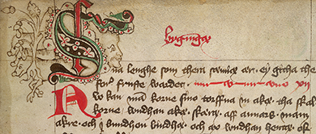

<?xml version="1.0" encoding="UTF-8"?>
<div xmlns="http://www.w3.org/1999/xhtml" data-template="templates:surround" data-template-at="content" data-template-with="templates/page.html">
    <div class="row">
        <div class="col-xs-12 col-sm-10 col-md-8 col-lg-6">
            <h1 class="page-header">Old Swedish Manuscripts</h1>
            
            <h4>Collections</h4>
            <p>Sweden's largest libraries, the National Library and Uppsala University Library, together have around 250 medieval manuscripts written in Old Swedish in their collections. This comprises 70 percent of the preserved manuscripts and is a unique and invaluable source to medieval Swedish language and history.</p>            
            <p>The present project collaboration involves deep cataloguing and description of both content and physical form for each manuscript. The need for such a presentation is great. Reasoning catalogues are important tools for historians, philologists and other specialists. They are also a prerequisite to be able to digitize the manuscripts and make them available online. The collections of the National Library and Uppsala University Library will be treated as one unit in the project.</p>
            <br/>
            <br/>
            <br/>
        </div>
    </div>
</div>